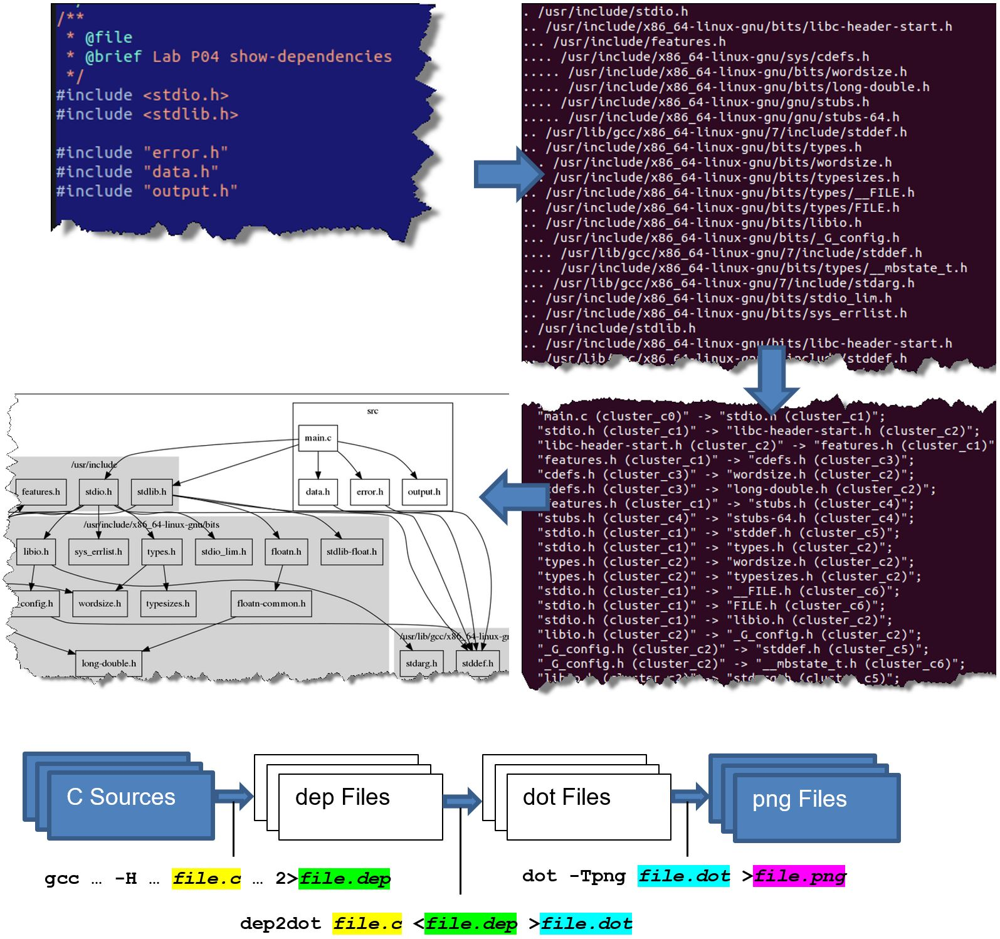
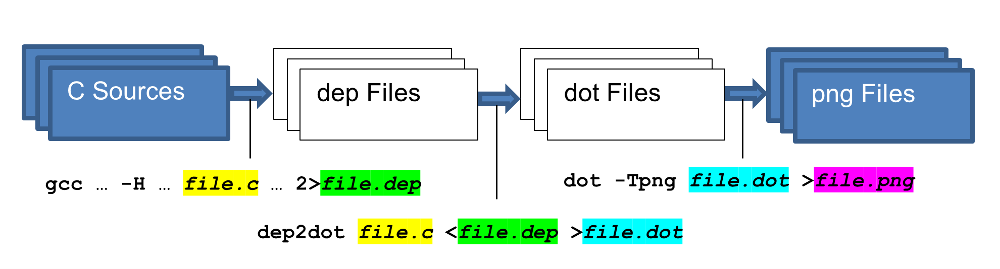
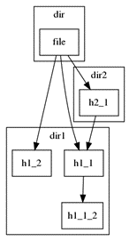
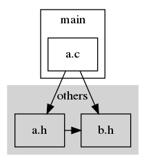

04 - Modularisieren von C Code¶

1. Übersicht¶
In diesem Praktikum üben Sie modulare Programmierung indem Sie ein Java Programm (bestehend aus drei Java Files) in ein entsprechendes C Programm aus drei Modulen (aus je einem Header- und Implementations- File) übersetzen. Sie passen das Makefile so an, dass die entsprechenden Module mit kompiliert werden.
In der zweiten Aufgabe erstellen Sie Makefile Regeln für die drei Schritte von den C Source Files zur graphischen Darstellung der Abhängigkeiten.

Im Anhang ist eine Übersicht über die verwendeten File Formate gegeben.
2. Lernziele¶
In diesem Praktikum lernen Sie die Handgriffe um ein Programm zu modularisieren, d.h. in mehrere Module aufzuteilen.
Sie wissen, dass ein Modul aus einem C-File und einem passenden H-File besteht.
Sie können Header Files korrekt strukturieren.
Sie deklarieren im Header-File die öffentlichen Typen und Funktionen eines Moduls.
Sie wissen wie Include Guards anzuwenden sind.
Sie können Module im
Makefilezur Kompilation hinzufügen.Sie können
MakefileRegeln schreiben.
Die Bewertung dieses Praktikums ist am Ende angegeben.
Erweitern Sie die vorgegebenen Code Gerüste, welche im git
Repository snp-lab-code verfügbar sind.
3. Aufgabe 1: Modularisieren¶
Das zu ergänzende Programm dep2dot hat folgende Funktionalität:
Ergänzen Sie in modularize/src den Code in triangle.c,
read.h, read.c, rectang.h und rectang.c so
dass die Tests erfolgreich durchlaufen. Die C Implementation soll
dieselbe Funktionalität haben wie die gegebenen Java Files. Lehnen Sie
sich so nahe wie möglich an die Java Files an.
In den Header-Files implementieren Sie den Include-Guard und deklarieren Sie die öffentlichen Funktionen und gegebenenfalls
#define.In den Implementations-Files implementieren Sie die Funktionen.
Die drei Java Files liegen in modularize/java.
Tipps¶
Implementieren Sie die Symbole welche vollständig in Grossbuchstaben geschrieben sind als
#define.EOFkommt schon ausstdio.hund sollte deshalb nicht mehr definiert werden.Jene
#definewelche von andern Modulen verwendet werden kommen ins Header-File, die andern ins Implementations-File.Ein Grossteil des Java Codes aus den Methoden Bodies kann eins-zu-eins in C übernommen werden. Listen Sie auf welche Unterschiede es gibt:
| Java | C |
|---|---|
byte
| |
boolean
| |
true
| |
false
| |
System.out.print(…)
| |
System.out.println(…)
| |
System.in.read()
| |
byte[] buffer = new byte[BUFFERSIZE];
| |
public class rectang {
public boolean Rectangular(…)
{ … }
}
| |
public class read {
public int getInt(...)
throws java.io.IOException
{ ... }
}
| |
class triangle {
public static void main(String[] args)
throws java.io.IOException
{ ... }
}
| |
read ReadInt = new read();
...
word = ReadInt.getInt(MAX_NUMBER);
| |
rectang Rect = new rectang();
...
if (Rect.Rectangular(a, b, c) == true) { ... }
| |
System.out.println(
"-> Dreieck " + a + "-" + b + "-" + c
+ " ist rechtwinklig");
|
4. Aufgabe 2: Makefile Regeln¶
Die folgenden drei Schritte erstellen von einem C Source File eine graphische Darstellung der Abhängigkeiten:
gcc ... -H .. file.c ... 2> file.dep(Regeln im Makefile bereits vorhanden)dep2dot file.c <file.dep >file.dot(in dieser Aufgabe zu erstellen)dot -Tpng file.dot >file.png(in dieser Aufgabe zu erstellen)
Sie sollen für die Compiler-ähnlichen Programme dep2dot und dot
Makefile Regeln schreiben.
Das Programm dep2dot hat folgende Funktionalität:
Es liest von
stdindie vom Compiler generierten Abhängigkeits-Daten in Form desdepFormates ein.Das erste und einzige Command Line Argument gibt das File an für welches die von
stdingelesenen Abhängigkeiten gelten.Auf
stdoutwerden die Abhängigkeiten vonstdinübersetzt alsdot-File Format ausgegeben.
Das Programm dot hat folgende Funktionalität:
Es liest die textuelle Beschreibung eines Graphen aus der übergebenen Datei (erstes Argument) ein.
Auf
stdoutwird die grafische Darstellung der Beschreibung der Eingabe-Datei impng-File Format ausgegeben.
Das dep-Format und das dot-Format sind im Anhang beschrieben.
Sie können die Funktionalität des Programms dep2dot kennen lernen,
indem Sie folgende Zeilen auf der Bash Shell ausführen. Das
dep.input File ist Teil der automatisierten Test Suite im
Verzeichnis tests:
bin/dep2dot dir/file <tests/dep.input >dep.dot
dot -Tpng dep.dot >dep.png
firefox dep.png
Als Resultat sollte Firefox folgende Graphik darstellen:

Definieren Sie im Makefile Regeln, welche die einzelnen Schritte von
den Source Files zu den png Files ausführen.
Prüfen Sie schliesslich die Umsetzung Aufgabe mittels make dep-clean dep && firefox ./src/*.png
4.1 Neue Regeln hinzufügen¶
Führen Sie im Makefile an den angegebenen Stellen folgende
Ergänzungen durch
definieren Sie eine Variable
DEPFILESderen Inhalt die Liste alle Einträge der VariableSOURCESist, wobei bei allen die Endung.cdurch die Endung.c.pngersetzt istfügen Sie zum
Pseudo-Target .PHONEYdas Targetdepdazu – dies besagt, dass das später folgenden Targetdepnicht ein File repräsentiert (ohne dieses Setting würde make gegebenenfalls nach einem File mit Namendepsuchen um zu entscheiden ob es inkrementell gebildet werden muss)schreiben Sie das Target
depgemäss der Beschreibung im Makefileschreiben Sie die Suffix Regel für die Übersetzung von
.png <- .dotgemäss Vorgabe imMakefile(als Inspiration, siehe auch die%.c.dep: %.cSuffix Regel weiter unten imMakefile) – erklären Sie was die Regel machtschreiben Sie die Suffix Regel für die Übersetzung von
.dot <- .depgemäss Vorgabe imMakefile– erklären Sie was die Regel macht
Die Umsetzung der obigen Änderungen sind erfolgreich, wenn Sie folgende Shell Command Line erfolgreich ausführen können und in Firefox die Abhängigkeiten der C-Files von den Include Files dargestellt wird.
make dep-clean dep && firefox ./src/*.png
4.2 Resultate analysieren und erklären¶
Analysieren Sie die in der vorherigen Aufgabe erstellten grafischen Darstellungen.
Erklären Sie was dargestellt wird und stellen Sie den Bezug zum zugehörigen C-Code her.
5. Bewertung¶
Die gegebenenfalls gestellten Theorieaufgaben und der funktionierende Programmcode müssen der Praktikumsbetreuung gezeigt werden. Die Lösungen müssen mündlich erklärt werden.
Aufgabe |
Kriterium |
Punkte |
|---|---|---|
1 |
Sie können das funktionierende Programm inklusive funktionierende Tests demonstrieren und erklären. |
|
1 |
Module einbinden, Header Files schreiben |
2 |
2 |
Sie können das funktionierende Makefile demonstrieren und erklären. |
|
2 |
Neue Regeln hinzufügen |
2 |
6. Anhang¶
6.1 Verwendete zusätzliche Sprach Elemente¶
Sprach Element
fprintf(stderr, "v=%d", v)
Beschreibung
Formatierte Ausgabe auf den Standard Error Stream. Siehe man 3 stderr und man 3 fprintf.
6.2 Verarbeitung und verwendete File Formate ¶
Das Programm in diesem Praktikum ist Teil für die graphische
Darstellung von #include File Abhängigkeit von C Files.
Den ersten Schritt für die Darstellung der #include File
Abhängigkeiten bietet der Compiler. Der Compiler kann mittels der -H
Command Line Option auf stderr ein Text File generieren, welches die
tatsächlich verwendeten Header Files auflistet. Zusätzlich wird im
Resultat die Verschachtelungstiefe der Includes angegeben.
Im zweiten Schritt übersetzt das Programm (dep2dot) dieses
Praktikums solche Dependency Files (dep) in eine Text Repräsentation
der Abhängigkeiten (dot) welche in graphische Darstel-lung (png)
übersetzt werden kann.
Als Tool zur Übersetzung der dot Files in das png Format dient das
dot Tool. Dieses Tool muss gegebenenfalls installiert werden:
sudo apt install graphviz
Die png Files können dann z.B. in der Programm Dokumentation
integriert werden (Darstellung zu Test Zwecken z.B. mittels firefox file.png).
6.2.1 dep File¶
Siehe: man gcc
-H Print the name of each header file used, in addition to other
normal activities. Each name is indented to show how deep in the
#include stack it is. [...]
Das File wird auf stderr ausgegeben.
Beispiel File (für Abhängigkeiten des main.c Files des dep2dot Programms)
. /usr/include/stdio.h
.. /usr/include/x86_64-linux-gnu/bits/libc-header-start.h
... /usr/include/features.h
.... /usr/include/x86_64-linux-gnu/sys/cdefs.h
..... /usr/include/x86_64-linux-gnu/bits/wordsize.h
..... /usr/include/x86_64-linux-gnu/bits/long-double.h
.... /usr/include/x86_64-linux-gnu/gnu/stubs.h
..... /usr/include/x86_64-linux-gnu/gnu/stubs-64.h
.. /usr/lib/gcc/x86_64-linux-gnu/7/include/stddef.h
.. /usr/include/x86_64-linux-gnu/bits/types.h
... /usr/include/x86_64-linux-gnu/bits/wordsize.h
... /usr/include/x86_64-linux-gnu/bits/typesizes.h
.. /usr/include/x86_64-linux-gnu/bits/types/__FILE.h
.. /usr/include/x86_64-linux-gnu/bits/types/FILE.h
.. /usr/include/x86_64-linux-gnu/bits/libio.h
... /usr/include/x86_64-linux-gnu/bits/_G_config.h
.... /usr/lib/gcc/x86_64-linux-gnu/7/include/stddef.h
.... /usr/include/x86_64-linux-gnu/bits/types/__mbstate_t.h
... /usr/lib/gcc/x86_64-linux-gnu/7/include/stdarg.h
.. /usr/include/x86_64-linux-gnu/bits/stdio_lim.h
.. /usr/include/x86_64-linux-gnu/bits/sys_errlist.h
. /usr/include/stdlib.h
.. /usr/include/x86_64-linux-gnu/bits/libc-header-start.h
.. /usr/lib/gcc/x86_64-linux-gnu/7/include/stddef.h
.. /usr/include/x86_64-linux-gnu/bits/floatn.h
... /usr/include/x86_64-linux-gnu/bits/floatn-common.h
.... /usr/include/x86_64-linux-gnu/bits/long-double.h
.. /usr/include/x86_64-linux-gnu/bits/stdlib-float.h
. src/error.h
.. /usr/lib/gcc/x86_64-linux-gnu/7/include/stddef.h
. src/data.h
.. /usr/lib/gcc/x86_64-linux-gnu/7/include/stddef.h
. src/output.h
Multiple include guards may be useful for:
/usr/include/x86_64-linux-gnu/bits/stdlib-float.h
/usr/include/x86_64-linux-gnu/bits/sys_errlist.h
/usr/include/x86_64-linux-gnu/bits/typesizes.h
/usr/include/x86_64-linux-gnu/gnu/stubs-64.h
/usr/include/x86_64-linux-gnu/gnu/stubs.h
6.2.2 dot File¶
Graphviz ist ein mächtiges Tool-Set welches Graphen, definiert in
einem dot-Text File, automatisch anordnet und in png, gif und
andere Formate übersetzt.
Siehe die offizielle Web-Page https://www.graphviz.org/.
Es gibt als Teil dieses Tool-Sets verschiedene Übersetzer. Der hier
verwendete ist der Basis-übersetzer: dot.
Das dot-File Format kennt viele Möglichkeiten die Knoten und Kanten
eines Graphen und deren Anordnung anzugeben.
Der Vorteil eines solchen Tool-Sets ist, dass man den Inhalt (den Graphen) einfach definieren kann und sich nicht um das komplexe Problem der ansprechenden Visualisierung kümmern muss.
Beispiel File (dot -Tpng sample.dot > sample.png)
digraph G {
node [shape=box]
A [label="a.c"];
B [label="a.h"];
C [label="b.h"];
subgraph cluster_c0 {
label="main"; color=black;
A;
}
subgraph cluster_c1 {
label="others"; style=filled; color=lightgrey;
{ B; C; rank=same; }
}
A -> B;
A -> C;
B -> C;
}

6.2.3 png File¶
Das png Format ist ein verlustfrei komprimiertes Raster Graphik
Format. Es wird oft in Web Pages verwendet.
Version: 22.02.2022